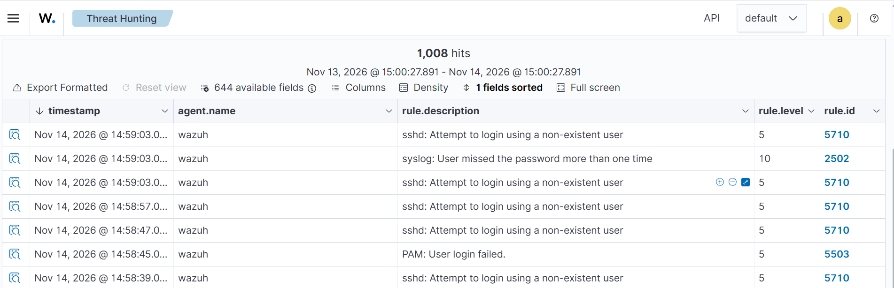

IoT GPS tracker med live kort
En Pico W med GPS-modul sender positionen trådløst via MQTT til en MariaDB-database og viser ruten live på et Google Maps-kort.
status: cybersikkerhedsstuderende · Aarhus
Jeg læser Cybersikkerhed på Erhvervsakademi Aarhus og har tidligere læst til IT-Teknolog. Jeg interesserer mig for den praktiske side af sikkerhed: at forstå, hvordan netværk og systemer fungerer, så de kan overvåges, sikres og dokumenteres.

En Pico W med GPS-modul sender positionen trådløst via MQTT til en MariaDB-database og viser ruten live på et Google Maps-kort.
Et sikkert virksomhedsnetværk med VLAN-segmentering, VPN, Active Directory og hærdning mod fx DHCP spoofing.
Mit eget sikkerhedslab på en Lenovo ThinkCentre M720q: Proxmox som hypervisor, Wazuh som SIEM, en testcontainer jeg selv "angriber" for at efterprøve detektionen, og sikker fjernadgang med Tailscale uden åbne porte.
Et komplet IoT system bygget fra bunden. En Pico W med GPS modul sender positionen trådløst i realtid via MQTT. Dataene gemmes i en MariaDB database og vises live på et interaktivt Google Maps kort.
Resultat: et fungerende system fra ende til anden. Enheden kunne flyttes udendørs, og ruten blev logget og vist live.
Formålet var at designe, konfigurere og implementere en skalerbar og sikker netværksinfrastruktur for en simuleret mellemstor virksomhed med krav om høj oppetid, segmentering og beskyttelse mod cybertrusler. Hold musen over dele af netværket, og vælg et område nedenfor.
Et selvbygget sikkerhedslab derhjemme. En Lenovo ThinkCentre M720q kører Proxmox VE med en Ubuntu-VM til Wazuh og små LXC-containere til resten: en testmaskine, som jeg bevidst laver mistænkelig aktivitet på, og en Tailscale-container, der giver mig sikker adgang til hele labbet hjemmefra. Wazuh-agenter på serveren og containerne sender logs og hændelser til Wazuh, så jeg kan øve detektion på et rigtigt netværk og se, om mine tests bliver opdaget.



Resultat: et kørende homelab med sikker fjernadgang, hvor Wazuh opdager mislykkede SSH-logins, samler gentagne forsøg til en brute force-alarm og fanger manipulation af følsomme filer i realtid på testcontaineren.
Alle projekter er lavet i lukkede testmiljøer. Intet her indeholder rigtige adresser eller adgangsoplysninger.
Skriv gerne, hvis du vil høre mere om mine projekter.
ilyasabduhersi@gmail.com